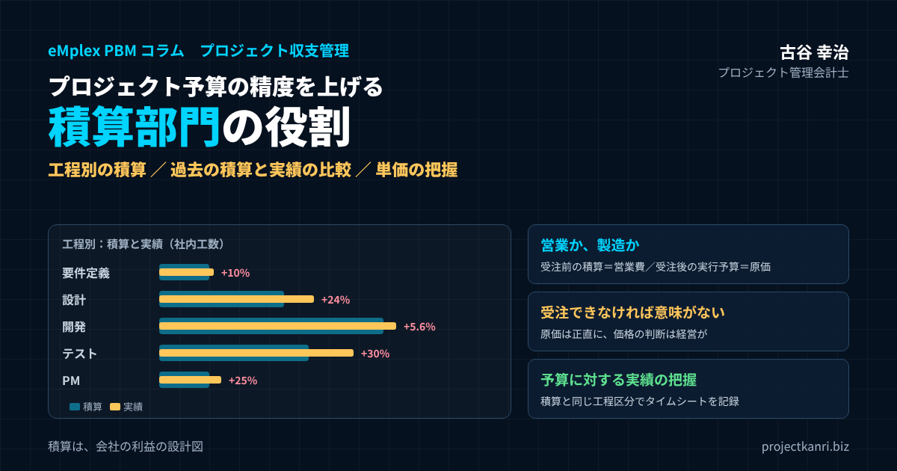

プロジェクト予算の精度を上げる積算部門の役割―設計・開発・テスト・運用の工程別の積算、過去の積算と実績の比較、単価の把握、積算部門のコストは営業か製造か、受注率とのバランス、予算に対する実績の把握まで

結論：予算の精度は「積算」で決まり、「実績との比較」で上がる
この記事の要点
- 積算が利益を決める：プロジェクトの利益の上限は受注の時点で決まる
- 工程別に積算：要件定義・設計・開発・テスト・運用・プロジェクト管理
- 実績と比較：過去の積算と実績を工程別に比べ、超過の原因ごとに直す
- 単価の把握：社内単価・外注単価・販売単価を一か所で管理し定期的に見直す
- 営業か製造か：管理会計では受注前の積算＝営業費、受注後の実行予算作成＝プロジェクト原価
- 受注できなければ意味がない：原価は正直に、価格の判断は経営が責任を持つ
プロジェクト管理会計士の古谷です。ご支援先で赤字のプロジェクトの原因を一緒に調べていくと、多くの場合、たどり着くのはプロジェクトの遂行の問題ではなく、受注の前の積算の問題です。工数の見込みが甘かった、テストの工程を軽く見ていた、外注の単価が古いままだった。プロジェクトの予算は、受注の前の積算をもとに作られます。積算が実態とずれていれば、予算もずれ、そのずれはプロジェクトが進むにつれて差異として表れます。
本記事の結論は三つです。第一に、積算を営業の付随的な作業ではなく、会社の利益を決める専門の機能として位置づけ、責任者を明確にすること。第二に、過去の積算と実績を工程別に比較し、その結果を次の積算に反映させる循環をつくること。そして第三に、積算の精度だけを追い求めるのではなく、受注できる価格とのバランスを取ることです。受注できなければ、どれほど正確な積算も意味がありません。
建設業では、積算は古くから専門の部門として確立されてきました。一方で、システム開発やコンサルティング、映像制作などのプロジェクト型ビジネスでは、積算が営業の担当者や、プロジェクトマネージャーの経験と勘に任されていることが少なくありません。本記事では、システム開発の工程を例にしながら、業種を問わず使える積算の考え方を整理します。
なぜ積算部門が重要なのか
プロジェクトの利益は、受注した時点でその大半が決まります。受注の金額と、プロジェクトを仕上げるのに必要な原価の見込み。この二つの差が、プロジェクトの利益の上限です。プロジェクトが始まってから、現場の工夫で原価を下げることはできますが、積算の段階で見落とした工数や費用を、すべて取り戻すことは困難です。
| 役割 | 内容 |
|---|---|
| 受注の価格の根拠 | 原価の見込み＋利益とリスクの上乗せで見積の金額を決める |
| プロジェクトの予算の土台 | 工程別・人員別の工数を実行予算に引き継ぐ |
| 会社の見積の力の蓄積 | 積算と実績の差を記録・分析し、次の積算に活かす |
積算の役割は、大きく三つあります。一つ目は、受注の価格を決める根拠をつくることです。顧客に提示する見積の金額は、原価の見込みに、利益とリスクの上乗せを加えて決まります。原価の見込みが正確でなければ、価格の判断もできません。
二つ目は、プロジェクトの予算の土台をつくることです。受注した後、プロジェクトマネージャーは積算をもとに実行予算を作ります。積算の段階で工程ごと、人員ごとの工数が整理されていれば、実行予算を素早く、正確に作ることができます。
三つ目は、会社の見積の力を蓄積することです。過去の積算と実績の差を記録し、分析し、次の積算に活かす。この循環を担う専門の機能があることで、会社全体の見積の精度が年々上がっていきます。積算を個人の経験と勘に任せていると、その人が異動したり退職したりしたときに、見積の力も失われてしまいます。
積算の重要性は、会社の規模が大きくなるほど高まります。案件の数が増え、一人の経営者や熟練者がすべての見積に目を通すことができなくなったとき、積算の仕組みがなければ、見積の品質は担当者ごとにばらつき始めます。成長の段階で積算の仕組みを整えておくことは、利益の出る成長のための投資です。
積算部門の役割と位置づけ
積算部門といっても、必ずしも独立した大きな組織が必要なわけではありません。会社の規模によっては、数人の担当者や、プロジェクト管理の事務局の中の一つの役割として置くこともできます。大切なのは、積算の責任者が明確であり、積算の方法と過去の実績のデータが組織として管理されていることです。
| 段階 | 仕事 | 関わる人 |
|---|---|---|
| 引き合い | 顧客の要件の整理、積算の範囲の確認 | 営業 |
| 積算 | 工程別・作業別の工数と費用の見積もり | 積算部門・現場 |
| 原価の確定 | 単価の適用、リスクの上乗せ | 積算部門 |
| 価格の決定 | 利益の上乗せ、戦略的な判断 | 営業・経営 |
| 引き継ぎ | 積算の前提を実行予算へ | 積算部門・PM |
| 振り返り | 積算と実績の比較、改善 | 積算部門・PM |
積算部門の仕事は、営業の担当者から引き合いの情報を受け取り、顧客の要件を整理し、工程ごと、作業ごとに工数と費用を見積もることから始まります。そのうえで、社内の人員の単価、外注の単価、経費の見込みを当てはめて原価を算出し、リスクの上乗せを加えて、見積の原価を確定させます。価格の決定そのものは、営業や経営の判断ですが、その判断の根拠となる原価を示すのが積算部門です。
積算部門の位置づけで大切なのは、営業からの独立性です。営業の担当者は、受注を取りたいという立場から、どうしても原価の見込みを低く見積もりがちです。積算部門が営業とは別の立場から原価を見積もることで、価格の判断に、現実的な原価の見込みが反映されます。一方で、積算部門が現場から離れすぎると、実態に合わない積算になります。積算部門は、営業と現場の間に立ち、両方の情報をもとに原価を見積もる役割を担います。
積算部門の存在は、営業の担当者にとっても助けになります。見積の作成に追われる時間が減り、顧客との対話や提案の内容の検討に時間を使えるようになるからです。積算部門と営業は、対立する関係ではなく、受注と利益の両方を目指す協力の関係です。
工程別に積算する：設計・開発・テスト・運用
積算の精度を上げる基本は、プロジェクトを工程に分け、工程ごとに工数と費用を見積もることです。プロジェクト全体を一括で見積もると、どこに見込みの甘さがあったのかを後から検証できません。システム開発であれば、要件定義、設計、開発、テスト、そして稼働した後の運用という工程に分けるのが一般的です。
| 工程 | 積算の方法 | 見落としやすい点 |
|---|---|---|
| 要件定義 | 会議・調査・資料作成の工数 | 顧客側の意思決定の遅れ |
| 設計 | 画面・帳票・機能・連携の数×標準工数 | 要件のあいまいさによる手戻り |
| 開発 | 作るものの量と難易度、流用の可否 | 流用予定の部品の大幅修正 |
| テスト | テストの段階ごとの工数＋不具合修正・再テスト | 開発の一定割合で機械的に見積もる |
| 運用 | 問い合わせ・定期作業・障害対応・小改修（月額） | 稼働直後の対応の多さ |
| プロジェクト管理 | 進捗管理・会議・報告・調整 | 規模が大きいほど比率が上がる |
設計の工程の積算では、画面や帳票、機能の数、外部のシステムとの連携の数といった、作るものの量を数えることから始めます。作るものの量に、一つあたりの標準の工数を掛けることで、工数を見積もります。設計の工数は、要件の明確さに大きく左右されます。顧客の要件があいまいな段階での積算は、設計の工数に幅を持たせておく必要があります。
開発の工程は、作るものの量と難易度から工数を見積もります。新しく作る部分と、既存の部品を流用できる部分を分けることが大切です。流用できると見込んでいた部品が、実際には大幅な修正が必要だったということは、よく起きる見積の誤りです。
テストの工程は、積算で最も見落とされやすい工程です。単体のテスト、結合のテスト、システム全体のテスト、顧客の受け入れのテストと、テストにはいくつもの段階があります。そして、テストで見つかった不具合の修正と、その後の再テストの工数も必要です。私がご支援してきた会社でも、テストの工数を開発の工数の一定の割合で機械的に見積もった結果、実績が大きく上回るという例を多く見てきました。
運用の工程は、稼働した後の保守や運用の業務です。問い合わせへの対応、定期的な作業、障害への対応、小さな改修などを見積もります。運用は継続の契約になることが多く、月額の費用として見積もります。運用の積算で大切なのは、稼働の直後の問い合わせや不具合の対応が、安定した後よりも多くなることを織り込んでおくことです。
プロジェクト管理の工数も、独立した項目として積算します。進捗の管理、顧客との会議、報告の資料の作成、社内の調整など、プロジェクト管理には工程全体を通じて工数がかかります。プロジェクトの規模が大きくなるほど、プロジェクト管理の工数の比率も高くなります。
概算の見積と詳細の見積を使い分ける
すべての引き合いに、同じ手間で積算をする必要はありません。案件の段階と受注の確度に応じて、概算の見積と詳細の見積を使い分けることが、積算部門の効率を高めます。
| 項目 | 概算の見積 | 詳細の見積 |
|---|---|---|
| 時期 | 引き合いの初期 | 受注の可能性が高まった段階 |
| 方法 | 過去の類似案件・規模から幅を持たせて算出 | 工程別・作業別に積み上げ |
| 目的 | 顧客の予算検討、受注の可否の判断 | 契約金額の根拠、実行予算の土台 |
| 注意点 | 金額の一人歩き（前提と幅を明記） | 積算の手間と受注確度のバランス |
概算の見積は、引き合いの初期の段階で、顧客が予算を検討するために使う見積です。過去の似た案件の実績や、作るものの規模から、幅を持たせた金額を示します。詳細の見積は、受注の可能性が高まった段階で、工程別、作業別に積み上げて作る見積です。契約の金額の根拠となり、受注した後は実行予算の土台になります。
概算の見積で注意したいのは、その金額が一人歩きすることです。顧客は、概算の見積の金額を予算として確保し、詳細の見積で金額が上がると、受け入れてもらえないことがあります。概算の見積を出すときは、前提となる条件と、金額の幅、詳細の見積で変わりうることを、明確に伝えておきましょう。
工程別の積算と実績の数値例
一つのシステム開発のプロジェクトを例に、工程別の積算と実績を比べてみましょう。社内の工数を2,400時間と積算したプロジェクトが、完了した時点で2,820時間かかったとします。
| 工程 | 積算 | 実績 | 差異 | 超過率 |
|---|---|---|---|---|
| 要件定義 | 200時間 | 220時間 | ＋20時間 | ＋10.0% |
| 設計 | 500時間 | 620時間 | ＋120時間 | ＋24.0% |
| 開発 | 900時間 | 950時間 | ＋50時間 | ＋5.6% |
| テスト | 600時間 | 780時間 | ＋180時間 | ＋30.0% |
| プロジェクト管理 | 200時間 | 250時間 | ＋50時間 | ＋25.0% |
| 合計 | 2,400時間 | 2,820時間 | ＋420時間 | ＋17.5% |
数値は説明のための例です。
全体では、実績が積算を420時間、約17.5%上回りました。工程別に見ると、テストの工程が180時間、30%上回り、超過の最大の原因になっています。設計の工程も120時間、24%上回りました。一方で、開発の工程は約5.6%の超過にとどまっています。
この比較から、このプロジェクトの積算の課題は、開発ではなく、設計とテストの見込みにあったことが分かります。全体の超過だけを見て「次は全体を2割増しで見積もろう」とすると、開発の工程は過大に、テストの工程は依然として過小に見積もることになります。工程別に比べることで、どこを直せばよいかが具体的になるのです。
このプロジェクトでは、プロジェクト管理の工程も25%超過しています。関係者が多く、会議や調整の工数が見込みを上回ったことが原因でした。プロジェクト管理の工数は、プロジェクトの規模だけでなく、関係者の数や意思決定の仕組みによっても大きく変わります。
過去の積算と実績を比較し、次の積算に活かす
一つのプロジェクトの比較から分かることには限りがあります。積算の精度を本格的に上げるには、過去の多くのプロジェクトの積算と実績を、同じ形式で蓄積し、傾向を分析することが必要です。
| 工程 | 平均の超過率 | 主な原因 | 次の積算での対応 |
|---|---|---|---|
| 要件定義 | ＋8% | 顧客側の確認の遅れ | 会議回数の前提を明記 |
| 設計 | ＋20% | 要件のあいまいさ、仕様変更 | 要件確定度に応じて幅を持たせ、変更管理を徹底 |
| 開発 | ＋4% | 一部の部品の流用不可 | 流用の前提を事前に確認 |
| テスト | ＋28% | 不具合修正・再テストの見落とし | 修正・再テストを独立項目で積算 |
| プロジェクト管理 | ＋18% | 関係者の多さ | 関係者数に応じた工数の基準 |
| 運用（初年度） | ＋15% | 稼働直後の問い合わせ増 | 初期の対応工数を上乗せ |
この例では、過去10件のプロジェクトの工程別の積算と実績の比率を平均すると、テストの工程が平均で28%、設計の工程が平均で20%、積算を上回っていました。開発の工程は平均で4%、運用の初年度は平均で15%の超過です。この傾向が分かれば、次のプロジェクトの積算で、テストと設計の工数の見込みを見直すことができます。
ただし、過去の平均の超過率を、そのまま機械的に上乗せすることはお勧めしません。超過の原因が、顧客の要件の変更なのか、社内の見積の漏れなのか、技術的な難しさなのかによって、直すべきところが違うからです。顧客の要件の変更による超過であれば、積算の工数を増やすのではなく、変更の管理と変更の契約の仕組みで対応すべきです。社内の見積の漏れであれば、積算の手順やチェックリストを見直します。
過去の積算と実績を比較するには、二つの前提が必要です。一つ目は、積算を工程別、作業別に残しておくことです。積算の金額の合計しか残っていなければ、実績と比べることはできません。二つ目は、実績の工数を、積算と同じ工程と作業の区分で記録することです。タイムシートの作業の区分を、積算の工程の区分とそろえておけば、プロジェクトが終わった時点で、自動的に比較の表を作ることができます。
比較の結果は、プロジェクトの完了の後に、積算部門とプロジェクトマネージャーが一緒に振り返る場で共有しましょう。積算部門は実績から学び、プロジェクトマネージャーは積算の前提を理解する。この振り返りの場が、積算と現場の間の溝を埋めます。
比較の表には、工数だけでなく、外注費や経費の積算と実績も含めておくと、より立体的に積算の傾向を把握できます。外注費の超過が多い工程では、外注先への発注の範囲の定義があいまいになっていることがよくあります。
標準工数の表をつくる
過去の積算と実績の比較を積み重ねていくと、作るものや作業の単位ごとの標準の工数が見えてきます。この標準の工数を表にまとめておくことが、積算の精度と速さの両方を高める強力な道具になります。
| 難易度 | 設計 | 開発 | テスト | 合計 |
|---|---|---|---|---|
| 低（一覧・参照） | 8時間 | 12時間 | 8時間 | 28時間 |
| 中（入力・更新） | 16時間 | 24時間 | 16時間 | 56時間 |
| 高（複雑な計算・連携） | 32時間 | 48時間 | 36時間 | 116時間 |
数値は説明のための例です。自社の実績から作成し、完了案件ごとに更新します。
標準の工数の表は、作るものの種類と難易度ごとに、一つあたりの工数を、工程別に定めたものです。たとえば、難易度の低い画面であれば設計に何時間、開発に何時間、テストに何時間というように決めておきます。積算の担当者は、作るものの数を数え、難易度を判定し、表の工数を掛け合わせるだけで、工程別の工数の大枠を算出できます。
標準の工数の表は、一度作ったら終わりではありません。プロジェクトが完了するたびに、実績の工数と比べ、表の数字を更新します。技術や道具が変われば、標準の工数も変わります。年に一度は、表全体を見直す機会を設けましょう。表の数字の根拠となったプロジェクトの件数も記録しておくと、どの数字がどれだけ信頼できるのかが分かります。
標準の工数の表があれば、経験の浅い担当者でも、一定の水準の積算ができるようになります。熟練の担当者は、表の数字を出発点に、案件の特徴に応じて調整することに時間を使えます。積算の力を個人から組織へ移すための、最も効果的な仕組みです。
単価の把握：社内単価・外注単価・販売単価
積算の精度を左右するもう一つの要素が、単価です。工数を正しく見積もっても、その工数に掛ける単価が実態とずれていれば、原価の見込みは外れます。積算で使う単価には、社内の人員の単価、外注の単価、そして顧客に提示する販売の単価の三つがあります。
| 単価 | 内容 | 見直しのポイント |
|---|---|---|
| 社内の人員の単価 | 役割・等級ごとの標準時間単価（給与・賞与・法定福利費など） | 昇給・稼働率の前提 |
| 外注の単価 | SESは時間・月の単価、一括外注は案件ごとの見積 | 市場相場の変化、年1回以上 |
| 販売の単価 | 顧客に提示する時間・人月の単価 | 原価単価との差（粗利）の確保 |
例：販売単価 人月100万円（160時間換算で6,250円／時間）、原価単価5,000円／時間 → 粗利1,250円／時間（20%）
社内の人員の単価は、役割や等級ごとの標準の時間単価として決めておくのが一般的です。時間単価には、給与と賞与だけでなく、会社が負担する社会保険料などの法定福利費や福利厚生費を含めます。さらに、実際に案件に使える時間は所定の労働時間よりも少ないため、稼働率を考慮して単価を決めるかどうかも、会社として決めておく必要があります。
外注の単価は、SESのように時間や月で契約するものと、一括で成果物を発注するものがあります。時間や月で契約する外注の単価は、市場の相場によって変わります。とくに技術者の需要が高い時期には、単価が上がります。積算で使う外注の単価を、年に一度は見直しておきましょう。一括で発注する外注は、案件ごとに外注先から見積を取り、その金額を積算に使います。
販売の単価は、顧客に提示する時間単価や人月の単価です。販売の単価と原価の単価の差が、工数あたりの粗利になります。たとえば、販売の単価が人月100万円、つまり160時間で割って時間あたり6,250円で、社内の原価の単価が時間あたり5,000円であれば、時間あたりの粗利は1,250円、粗利率は20%です。人件費が上がっているのに販売の単価を据え置いていれば、粗利率は年々下がっていきます。
単価の把握で大切なのは、単価の表を一か所で管理し、積算部門と経理部門とプロジェクトマネージャーが同じ表を使うことです。積算で使う単価と、実績の原価の計算で使う単価が違えば、積算と実績を比べることができません。
運用・保守の積算：継続の契約ならではの注意点
稼働した後の運用や保守の積算は、開発の積算とは性質が異なります。開発は一度きりのプロジェクトですが、運用や保守は、毎月の継続の契約になることが多いからです。
運用や保守の積算では、月ごとの作業の量を見積もります。定期的な作業、問い合わせへの対応の件数と一件あたりの工数、障害への対応の見込み、小さな改修の見込みなどです。問い合わせの件数は、稼働の直後に多く、システムが安定するにつれて減っていく傾向があります。最初の数か月の対応の量を多めに見込んでおくことが大切です。
継続の契約の積算で見落とされやすいのが、年数の経過に伴う費用の変化です。人件費は毎年上がり、使っている部品やソフトウェアの更新の費用も発生します。契約の金額を何年も据え置いていると、運用や保守の粗利率は少しずつ下がっていきます。契約の更新の時期に、実績の工数と単価を確認し、必要に応じて金額の見直しを提案できるよう、運用や保守の実績も工程別に記録しておきましょう。
単価の見直しを価格に反映させる
単価を正しく把握しても、それが顧客への価格に反映されなければ、利益は守れません。人件費や外注の単価が上がっているのに、販売の単価が何年も据え置かれている会社は少なくありません。
私がお勧めしているのは、年に一度、社内の原価の単価と外注の単価の変化を確認し、販売の単価の改定の要否を判断する場を設けることです。改定が必要と判断したら、新規の案件の見積から新しい単価を使い、継続の契約については更新の時期に合わせて顧客に提案します。改定の根拠として、人件費や外注の単価の上昇の状況を、顧客に丁寧に説明できるよう準備しておくことが大切です。
単価の改定は、営業にとって勇気のいる仕事です。しかし、原価の上昇を価格に反映させないことは、利益を少しずつ削り続けることと同じです。積算部門が単価の変化を数字で示し、営業と経営が価格の判断をする。この役割分担は、単価の改定の場面でも変わりません。
リスクを積算に織り込む
積算には、どうしても不確実な部分が残ります。顧客の要件がまだ固まっていない、使ったことのない技術を使う、外部のシステムとの連携の仕様が分からない。こうした不確実な部分を、積算でどう扱うかが、積算の精度と受注のしやすさの両方を左右します。
| 方法 | 内容 | 長所 |
|---|---|---|
| 工数に幅を持たせる | 楽観・最頻・悲観の3つの工数を見積もる | 不確実さの大きさが見える |
| 予備を別項目にする | リスク対応の予備工数・費用を独立して積算 | 予備の消化を管理できる |
| 契約の形で分け合う | 要件定義を先に契約し、後工程を見積もり直す | 見積が高くなりすぎない |
一つの方法は、リスクの大きさに応じて、工数に幅を持たせることです。最も楽観的な場合、最も起こりやすい場合、最も悲観的な場合の三つの工数を見積もり、その幅を把握したうえで、積算の工数を決めます。もう一つの方法は、リスクに対する予備の工数や費用を、別の項目として積算に加えることです。予備を別の項目にしておけば、プロジェクトが始まった後、予備をどれだけ使ったのかを管理できます。
リスクを顧客との契約の条件で扱う方法もあります。要件があいまいな部分は、要件定義の工程だけを先に契約し、要件が固まってから設計以降の工程を見積もり直す、段階的な契約にする方法です。リスクを積算の上乗せだけで吸収しようとすると、見積の金額が高くなり、受注しにくくなります。契約の形を工夫することで、リスクを顧客と分け合うことができます。
予備の工数や費用は、プロジェクトマネージャーが自由に使えるものではなく、使う場合には理由を記録し、承認を得るというルールにしておくとよいでしょう。予備の使い方を記録しておけば、どのようなリスクが実際に起きたのかが分かり、次の積算でリスクを見込むときの材料になります。
積算部門のコストは営業か、製造か
積算部門を置くと、必ず出てくるのが、積算部門の人件費などのコストを、営業の費用として扱うのか、製造の原価として扱うのか、という問いです。この問いには、財務会計の視点と、管理会計の視点の二つから答える必要があります。
| 視点 | 受注前の積算 | 受注後の詳細積算（実行予算の作成） |
|---|---|---|
| 財務会計 | 一般に販売費及び一般管理費として扱われることが多い | プロジェクトの遂行のための活動（処理は専門家に確認） |
| 管理会計（お勧め） | 営業の費用として管理（失注案件の分も含む） | そのプロジェクトの原価として管理 |
| 見える化できること | 受注1件あたりの積算コスト、営業の効率 | 計画づくりを含めたプロジェクトの実態の原価 |
日本の収益認識会計基準では、IFRS第15号の契約コストの定めは範囲から除かれています。
まず財務会計の視点です。受注の前の見積や積算の作業は、特定の契約を履行するための作業ではなく、契約を獲得するための作業です。そのため、一般的には、受注の前の積算のコストは、販売費及び一般管理費として扱われることが多いと考えられます。なお、日本の収益認識に関する会計基準では、国際的な基準であるIFRS第15号にある、契約を獲得するための増分のコストなどの契約コストの定めは、基準の範囲から除かれています。建設業などで、受注が確実な案件の設計の費用を工事の原価に含めるといった実務もあり、具体的な会計の処理は、業種の慣行と会社の状況によって異なります。判断にあたっては、監査法人や税理士に確認してください。
次に管理会計の視点です。私は、積算部門のコストを、受注の前の積算と、受注の後の詳細な積算、つまり実行予算の作成とに分けて考えることをお勧めしています。受注の前の積算は、受注を獲得するための活動であり、営業の費用として管理します。受注できなかった案件の積算のコストも、ここに含まれます。一方で、受注した後にプロジェクトの実行予算を詳細に作る作業は、プロジェクトを遂行するための活動であり、そのプロジェクトの原価、つまり製造の側として管理します。
この分け方には理由があります。受注の前の積算のコストを営業の費用として管理すれば、受注一件あたりにどれだけの積算のコストがかかっているのか、つまり営業の効率を測ることができます。受注率が低いと、受注できなかった案件の積算のコストが、受注できた案件の負担として重くのしかかります。一方で、受注の後の積算をプロジェクトの原価に含めれば、プロジェクトの原価に、計画づくりの工数も含めた実態が反映されます。
積算部門の担当者の工数を、タイムシートで、受注の前の積算と、受注の後の実行予算の作成とに分けて記録しておけば、この分け方を実務で運用できます。財務会計の区分と管理会計の区分は、必ずしも一致させる必要はありません。経営の判断に役立つ形で、管理会計の区分を設計してください。
積算部門のコストを営業の費用として管理する場合も、積算部門の人件費を営業部門の人件費と混ぜないことが大切です。積算部門のコストを独立して把握しておけば、積算の生産性の変化や、積算部門の増員の効果を測ることができます。
積算部門のコストを数字で見る
積算部門のコストを、受注の効率の視点から見てみましょう。積算の担当者が5人、その年間の人件費が合計で4,000万円の会社を想定します。この会社は、年間200件の見積を作り、そのうち60件を受注し、受注の金額の合計は18億円だったとします。
| 項目 | 金額・件数 |
|---|---|
| 積算担当者の人件費 | 5人・4,000万円 |
| 見積の件数 | 200件 |
| 受注の件数（受注率） | 60件（30%） |
| 受注の金額の合計 | 18億円 |
| 見積1件あたりの積算コスト | 20万円 |
| 受注1件あたりの積算コスト | 約66.7万円 |
| 受注金額に対する積算コストの比率 | 約2.2% |
見積一件あたりの積算のコストは20万円、受注一件あたりでは約66.7万円です。受注の金額に対する積算のコストの比率は約2.2%になります。受注率が30%から40%に上がれば、同じ積算のコストで受注の件数が増え、受注一件あたりのコストは下がります。逆に、受注の見込みが低い引き合いにも積算の手間をかけ続けていると、積算のコストは受注に結びつかないまま膨らみます。
この数字から見えてくるのは、積算部門の生産性は、積算の精度だけでなく、どの引き合いに、どれだけの手間をかけるのかの判断にも左右されるということです。受注の見込みが低い引き合いには概算の積算で応じ、受注の見込みが高い引き合いには詳細な積算をする。積算にかける手間を、受注の確度に応じて使い分けることが、積算部門の効率を高めます。
受注できなければ意味がない：精度と価格のバランス
積算の精度を上げることは大切ですが、ここで忘れてはならないことがあります。受注できなければ、どれほど正確な積算も意味がないということです。
積算部門が原価の見込みを厳しく見積もるほど、リスクへの備えは厚くなりますが、見積の金額は高くなります。見積の金額が競合や顧客の予算を大きく上回れば、受注はできません。一方で、受注を取るために原価の見込みを低く見積もれば、受注できても赤字になります。積算の本当の難しさは、この二つの間でバランスを取ることにあります。
| 項目 | 担い手 | 考えること |
|---|---|---|
| 積算の原価 | 積算部門 | 現実的な原価の見込み（甘くしない） |
| リスクの上乗せ | 積算部門・PM | 不確実さに応じた予備 |
| 利益の上乗せ・価格 | 営業・経営 | 顧客の予算、競合、戦略的な価値 |
| 戦略的な低利益の受注 | 経営 | 原価を把握したうえで利益の上乗せを下げる判断 |
このバランスを取るために私がお勧めしているのは、積算の原価と、見積の価格を分けて考えることです。積算部門は、現実的な原価の見込みを示すことに専念します。そのうえで、営業と経営が、顧客の予算、競合の状況、その案件の戦略的な価値を考慮して、価格を決めます。戦略的に低い利益で受注する判断をするなら、それは積算を甘くすることではなく、原価の見込みを正しく把握したうえで、利益の上乗せを下げるという経営の判断として行います。
こうしておけば、受注した後に、そのプロジェクトがどれだけの利益を見込める案件なのかが、最初から明確になります。積算を甘くして受注した案件は、プロジェクトマネージャーにとって、最初から達成できない予算を背負わされることになります。積算の原価は正直に、価格の判断は経営が責任を持って。この役割分担が、受注と利益の両立の鍵です。
受注できなかった案件の振り返りも大切です。失注の理由が価格だったのか、提案の内容だったのか、実績や体制だったのか。価格が理由であれば、どの工程の積算が競合より高かったのかを分析することで、積算の方法の見直しや、より効率的な進め方の工夫につなげることができます。
受注率が極端に高い場合も、実は注意が必要です。ほとんどの見積が受注できているなら、価格が低すぎて、本来得られるはずの利益を取りこぼしている可能性があります。
見積の承認の仕組み：見積審査で利益を守る
積算の原価と価格の判断を分けたら、その判断を誰が、どのような基準で行うのかを決めておく必要があります。私がお勧めしているのは、一定の金額以上の見積、あるいは一定の粗利率を下回る見積については、提出の前に審査する仕組みを設けることです。
| 項目 | 確認すること |
|---|---|
| 積算の前提 | 範囲・役割分担・流用の前提は妥当か |
| 工程別の工数 | テスト・PM・運用などに漏れはないか |
| リスク | 不確実な部分に予備や幅を見込んでいるか |
| 単価 | 最新の社内・外注単価を使っているか |
| 価格・粗利率 | 会社の基準を満たしているか。下回る場合の理由 |
見積の審査では、積算の前提が妥当か、工程別の工数に漏れがないか、リスクの見込みは十分か、そして価格と粗利率が会社の基準を満たしているかを確認します。基準を下回る価格で提出する場合は、その理由と、受注した場合の採算の見込みを経営が確認したうえで承認します。
審査の仕組みは、営業の動きを遅くするものではなく、会社として責任を持って価格を決めるためのものです。審査の基準と手順を明確にしておけば、営業の担当者も、どの案件で経営の判断が必要なのかを事前に把握でき、顧客への回答の準備を進めやすくなります。審査の記録は、後で受注した案件の採算を振り返るときの材料にもなります。
失注の分析を積算に活かす
受注できなかった案件の分析は、受注した案件の積算と実績の比較と同じくらい、積算の改善に役立ちます。
| 失注の理由 | 確認すること | 打ち手 |
|---|---|---|
| 価格 | 競合・顧客予算との差、高かった工程 | 工程の進め方の見直し、契約形態の工夫 |
| 提案の内容 | 顧客の課題への適合 | 提案の質の向上 |
| 実績・体制 | 同種の実績、担当者の経験 | 実績づくり、体制の強化 |
| 納期 | 顧客の希望時期との差 | 人の確保、段階的な提供 |
失注の理由が価格であった場合、競合や顧客の予算と、自社の見積の金額の差を、できる範囲で把握します。そのうえで、自社の見積のどの工程が高かったのかを推測します。たとえば、テストの工数を他社より多く見込んでいたのであれば、それが品質への備えとして必要なものなのか、より効率的な進め方で減らせるものなのかを検討します。
失注の理由が価格以外であれば、提案の内容、実績、体制、納期など、積算以外の要因を改善します。どの理由で失注したのかを記録しておかないと、すべての失注を価格のせいにしてしまい、必要以上に価格を下げるという悪循環に陥ります。失注の記録は、営業と積算部門が共有し、定期的に振り返りましょう。
積算から実行予算へ：受注の後の引き継ぎ
受注が決まったら、積算をもとにプロジェクトの実行予算を作ります。この引き継ぎがうまくいかないと、せっかくの積算の情報が活かされず、プロジェクトマネージャーが一から予算を作り直すことになります。
| 項目 | 内容 |
|---|---|
| 工程別・作業別の工数 | 積算の内訳 |
| 前提条件 | 機能の範囲、流用の前提、顧客の役割分担 |
| リスクと予備 | 見込んだリスクと予備の工数・費用 |
| 単価 | 使った社内・外注の単価 |
| 契約の条件 | 支払条件、変更の扱い、検収の条件 |
引き継ぎで大切なのは、積算の数字だけでなく、積算の前提を伝えることです。どの機能を、どのような前提で、何時間と見積もったのか。どのリスクを、どれだけの予備として見込んだのか。顧客とどのような条件で合意したのか。これらの前提が引き継がれなければ、プロジェクトマネージャーは、実行予算のどこに余裕があり、どこが厳しいのかを判断できません。
私は、受注の後に、積算の担当者、営業の担当者、プロジェクトマネージャーの三者で、積算の前提を確認する場を設けることをお勧めしています。この場で、プロジェクトマネージャーが積算に疑問を持てば、その時点で実行予算に反映させ、必要であれば経営に報告します。プロジェクトが始まってから予算の不足に気づくよりも、始まる前に気づくほうが、打てる手は多くあります。
積算の前提を契約に書き、変更を管理する
積算の前提を、顧客との契約や見積書にも明記しておくことは、予算の精度を守るうえで非常に重要です。積算の前提が書かれていなければ、プロジェクトの途中で顧客の要望が膨らんでも、それが当初の範囲の内なのか外なのかを判断できません。
見積書や契約書には、作るものの範囲、作らないもの、顧客が担う役割、前提とする条件、そして範囲の外の作業が発生した場合の扱いを書いておきます。範囲の外の作業は、変更の要望として記録し、工数と費用の影響を見積もり、顧客と合意してから作業に入る。この変更の管理の仕組みがあれば、積算と実績の差のうち、顧客の要因による部分を、追加の売上として回収できます。
積算と実績の比較をするときも、変更によって増えた工数と、当初の範囲の中で増えた工数を分けて記録しておけば、積算そのものの精度を正しく評価できます。変更による工数まで積算の誤りとして扱うと、積算部門は必要以上に保守的な見積を作るようになってしまいます。
プロジェクト予算に対する実績の把握
積算の精度を上げる循環を回すには、プロジェクトの予算に対する実績を、工程別に、正確に把握することが欠かせません。実績の把握が不十分であれば、積算と実績を比べることはできず、積算の改善もできません。
| 項目 | 方法 |
|---|---|
| 社内の工数 | タイムシートで、プロジェクト×積算と同じ工程区分で記録 |
| 外注費 | 発注時にプロジェクトと工程を指定 |
| 経費 | プロジェクトと工程を指定して記録 |
| 確認の頻度 | できれば週次で、工程の予算消化率と成果物の完成度を比較 |
| 着地見込み | 月次で、実績のペースを踏まえて残りの工程を見積もり直す |
実績の把握の中心は、工数の記録です。社員が、どのプロジェクトの、どの工程に、何時間使ったのかを、タイムシートで記録します。工程の区分は、積算の工程の区分とそろえます。外注費は、発注の段階でプロジェクトと工程を指定し、請求の段階で実績として記録します。経費も同様に、プロジェクトと工程を指定して記録します。
実績は、月に一度ではなく、できれば週ごとに、予算と比べて確認します。工程ごとの予算の消化率と、成果物の完成の度合いを比べ、予算の消化が進みすぎている工程があれば、その時点で原因を確認します。テストの工程に入る前に、設計や開発の工程の超過に気づければ、残りの工程の進め方を見直すことができます。
そして、実績をもとに、着地見込みを毎月更新します。これまでの実績に、残りの工程の見込みを加えて、プロジェクトの完了の時点の原価を予想します。残りの工程の見込みは、積算の数字をそのまま使うのではなく、これまでの実績のペースを踏まえて見積もり直します。この着地見込みの更新の記録が、次のプロジェクトの積算の貴重な材料にもなります。
実績の把握は、プロジェクトマネージャーにとっても大きな武器になります。工程ごとの予算の消化の状況を自分で把握していれば、経営に追加の人員や予算を求めるときにも、根拠を持って説明することができます。
積算部門を評価する指標
積算部門を機能させるには、その成果を測る指標が必要です。積算部門の評価を、見積の件数だけで行うと、手間をかけずに多くの見積をこなすことが目的になってしまいます。逆に、積算の精度だけで評価すると、リスクを過大に見込んだ高い見積が増え、受注が減ります。
| 指標 | 測り方 | 偏りの兆し |
|---|---|---|
| 積算の精度 | 積算と実績の工数の差 | 精度だけ追うと見積が高くなる |
| 受注率 | 受注件数÷見積件数 | 受注率だけ追うと見積が甘くなる |
| 完了時の粗利率 | 受注案件の最終の粗利率 | 上の二つのバランスの結果 |
私がお勧めしているのは、積算の精度、受注率、そして受注した案件の完了の時点の粗利率の三つを組み合わせて見ることです。積算の精度は、積算の工数と実績の工数の差の大きさで測ります。受注率は、見積を出した案件のうち受注できた割合です。完了の時点の粗利率は、受注した案件が、最終的にどれだけの利益を残したかです。
この三つは、互いに引っ張り合う関係にあります。精度を上げようとして見積を高くすれば受注率が下がり、受注率を上げようとして見積を安くすれば粗利率が下がります。三つのバランスが取れているかどうかを、経営と積算部門が一緒に確認することで、積算部門は会社の利益に直結する機能として評価されるようになります。
指標は、積算部門の担当者を責めるためではなく、積算の仕組みを改善し、会社の見積の力を高めるために使ってください。
積算部門の組織と人材
積算部門を立ち上げる、あるいは強化するときに大切なのは、どのような人材を配置するかです。積算の担当者には、現場の業務への理解、数字への強さ、そして営業と現場の両方と対話できる力が求められます。
私がお勧めしているのは、現場の経験を持つ人を積算部門に配置することです。プロジェクトマネージャーや、現場のリーダーの経験を持つ人であれば、作業の実態を理解しており、現実的な工数を見積もることができます。一方で、現場から積算部門に移った人は、自分の経験に頼りすぎる傾向もあります。標準の工数の表や、過去の実績のデータを使う習慣を身につけてもらうことが大切です。
積算部門と現場の間で、人の交流を続けることも有効です。積算の担当者が、ときどきプロジェクトの振り返りに参加したり、プロジェクトマネージャーが積算の作業を経験したりすることで、互いの仕事への理解が深まります。積算部門が現場から孤立すると、積算は机上の数字になってしまいます。
会社の規模が小さく、専任の積算部門を置けない場合は、積算の責任者を一人決め、その人が積算の方法と単価の表と過去の実績のデータを管理する形から始めましょう。担当者が兼務であっても、積算の責任と仕組みが明確であれば、積算の精度は上がっていきます。
業種別の積算の特徴
積算の考え方は業種を問いませんが、業種ごとに積算の対象や単価の特徴は異なります。
| 業種 | 積算の中心 | 単価の特徴 |
|---|---|---|
| 建設業 | 図面から数量を拾い、材料・労務・外注を積み上げ | 材料価格の変動が大きい |
| システム開発 | 作るものの量と難易度から工程別に工数を積み上げ | 人の単価が原価の大半 |
| コンサルティング | 期間×人数×稼働割合 | 役割別の単価 |
| 映像制作・イベント | 日数、外部スタッフの人数×日当、機材・会場 | 外部費用の比率が高い |
建設業では、積算は古くから専門の職能として確立されてきました。図面から材料の数量を拾い出し、材料の単価、労務の単価、外注の単価を掛けて工事の費用を積み上げます。材料の価格の変動が大きい時期には、単価の更新の頻度が積算の精度を大きく左右します。
システム開発では、作るものの量と難易度から工数を見積もり、工程別に積み上げるのが基本です。原価の大半が人の時間であるため、工数の見積もりの精度と、人の単価の把握が鍵になります。コンサルティングでは、プロジェクトの期間と関わる人の人数、稼働の割合から工数を見積もります。映像制作やイベントでは、撮影や公演の日数、外部のスタッフの人数と日当、機材や会場の費用など、日数と外部の費用の積み上げが中心になります。
業種が違っても、作るものや作業を細かく分け、数量と単価を掛けて積み上げ、過去の実績と比べて直していく、という積算の基本は同じです。自社の業種に合わせて、積算の区分と単価の表を整えてください。
積算でよくある失敗と対策
最後に、積算と予算の精度について、私がご支援の現場でよく目にする失敗を整理しておきます。
| 失敗 | 起きること | 対策 |
|---|---|---|
| 一括で見積もる | どこが甘かったか検証できない | 工程別・作業別に積算 |
| 積算と実績を比べない | 同じ見積の誤りを繰り返す | 完了後に工程別に比較・振り返り |
| テストを機械的に見積もる | テスト工程で大幅超過 | 修正・再テストを独立項目に |
| 単価が古いまま | 原価の見込みが外れる | 単価表を一元管理し定期見直し |
| 営業が受注のために原価を低く見積もる | 最初から赤字のプロジェクト | 原価は積算部門、価格は経営 |
| 積算の前提を引き継がない | 実行予算が作り直しになる | 三者で前提を確認する場を設ける |
これらの失敗の多くは、積算が個人の経験と勘に任され、組織として積算と実績を比べる仕組みがないことから生まれます。積算は、一人の熟練者の技術ではなく、会社の資産として育てるものです。
どこから始めるか
本記事で紹介した仕組みを、一度にすべて整える必要はありません。これから積算の精度を上げたい会社には、次の順番で始めることをお勧めします。
最初に、積算を工程別に残すことです。これまで合計の金額だけで見積を作っていたなら、次の案件から、要件定義、設計、開発、テスト、プロジェクト管理といった工程ごとの工数を残すようにします。次に、タイムシートの作業の区分を、積算の工程の区分とそろえます。この二つができれば、プロジェクトが完了した時点で、工程別の積算と実績を比べることができます。
そして、完了したプロジェクトについて、積算と実績を比べる振り返りの場を設けます。最初は数件でも構いません。比べた結果を一つの表に積み重ねていけば、一年後には、自社の工程別の傾向が見えてきます。その傾向をもとに標準の工数の表をつくり、単価の表を整えていけば、積算は着実に会社の力になっていきます。
実務家として伝えたいこと：積算は会社の利益の設計図
私は、朋友建設の財務部でキャリアを始め、建設業の工事ごとの採算と向き合うところから仕事を学びました。その後、エンプレックスでCFOを、ホリプロで経営企画の責任者を務め、独立してからは200社を超えるプロジェクト型ビジネスの会社をご支援してきました。業種は違っても、利益の出る会社には共通点があります。それは、受注の前の積算を大切にし、積算と実績を比べ続けていることです。
積算は、会社の利益の設計図です。設計図が正確であれば、現場は迷わずに仕事を進めることができます。設計図が不正確であれば、現場はどれだけ努力しても、設計図に書かれていない費用に追われ続けます。そして、設計図の精度は、完成した建物、つまり完了したプロジェクトの実績と比べることでしか上がりません。
積算部門の仕事は、地味に見えるかもしれません。しかし、会社の利益を最初に決めているのは、積算部門です。積算部門を、営業の下請けでも、現場の付属物でもなく、会社の利益を守る専門の機能として位置づけ、その仕事に誇りを持てる環境をつくっていただきたいと思います。
積算と実績を比べる仕組みは、決して難しいものではありません。工程を分けて残し、同じ区分で実績を記録し、終わったら比べる。この当たり前のことを、会社として続けられるかどうかが、利益の出る会社とそうでない会社の分かれ目になっていると、私は感じています。
eMplex PBMで積算から実績までをつなぐ
私たちが提供しているeMplex PBMは、プロジェクト型ビジネスの予算、実績、着地見込みを一つの仕組みで管理するクラウドサービスです。
業種別のテンプレートで、売上、労務費、外注費、直接経費の予算をプロジェクトごとに作り、タイムシートの工数を労務費の原価に連携することで、予算に対する実績を把握できます。フォーキャストレポートでは、着地見込みと粗利率のアラートを確認でき、案件種別、取引先、部署といった切り口でドリルダウンできます。事業別・プロジェクト別の収支レポートで、完了したプロジェクトの予算と実績を比べることもできます。
営業の側では、商談化率や受注率から営業の生産性を確認でき、名刺を起点に、取引先とプロジェクトの履歴をつなぐことができます。積算から実行予算、実績、着地見込みまでを一つのデータでつなぐ仕組みとして、ご検討いただければ幸いです。
まとめ：積算を組織の力に変える
プロジェクトの予算の精度を上げるための要点を振り返ります。積算を、会社の利益を決める専門の機能として位置づけ、責任者を明確にすること。設計、開発、テスト、運用、プロジェクト管理の工程別に積算し、過去の積算と実績を工程別に比べ、超過の原因を分析して次の積算に反映させること。社内の単価、外注の単価、販売の単価を一か所で管理し、定期的に見直すこと。リスクは工数の幅や予備、契約の形で扱うこと。
積算部門のコストは、受注の前の積算を営業の費用、受注の後の実行予算の作成をプロジェクトの原価として管理し、財務会計の処理は専門家に確認すること。そして、受注できなければ意味がないことを忘れず、積算の原価は正直に、価格の判断は経営が責任を持つという役割分担で、精度と受注のバランスを取ること。受注の後は積算の前提を実行予算に引き継ぎ、予算に対する実績を工程別に把握し続けること。積算と実績の比較の循環が回り始めれば、予算の精度は年々上がっていきます。
まずは次の案件の積算を工程別に残すところから始めてみてください。
よくある質問（FAQ）
Q. 積算部門はなぜ重要なのですか？
A. プロジェクトの利益は受注時点の受注金額と原価見込みの差でほぼ決まり、その原価見込みを作るのが積算だからです。積算は受注価格の根拠、実行予算の土台、そして過去の実績を蓄積して会社の見積力を高める役割を担います。
Q. 積算部門のコストは営業費ですか、製造原価ですか？
A. 財務会計では、受注前の見積・積算は契約獲得のための活動として販売費及び一般管理費として扱われることが多いと考えられますが、業種の慣行や状況で異なるため監査法人・税理士に確認してください。管理会計では、受注前の積算を営業費、受注後の実行予算作成をプロジェクト原価として分けて管理する方法がお勧めです。
Q. 見積の精度を上げるにはどうすればよいですか？
A. 工程別（設計・開発・テスト・運用・PM）に積算し、過去の積算と実績を同じ区分で比較して超過の傾向と原因を分析し、次の積算に反映させます。タイムシートの作業区分を積算の工程区分とそろえることが前提です。
Q. 過去の超過率をそのまま上乗せしてよいですか？
A. お勧めしません。超過の原因が顧客の要件変更なら変更管理と変更契約で、社内の見積漏れなら積算手順やチェックリストの見直しで対応すべきです。原因ごとに直すべきところが違います。
Q. 積算の精度と受注率はどう両立させますか？
A. 積算部門は現実的な原価見込みを示すことに専念し、価格は営業と経営が顧客予算・競合・戦略的価値を考慮して決めます。戦略的に低い利益で受注するなら、積算を甘くするのではなく、利益の上乗せを下げる経営判断として行います。
Q. 積算部門はどう評価すればよいですか？
A. 積算の精度（積算と実績の工数差）、受注率、受注案件の完了時の粗利率の三つを組み合わせて見ることをお勧めします。三つは引っ張り合う関係にあるため、バランスを経営と一緒に確認します。